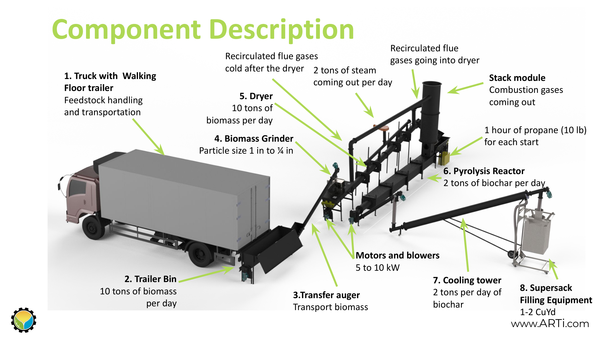
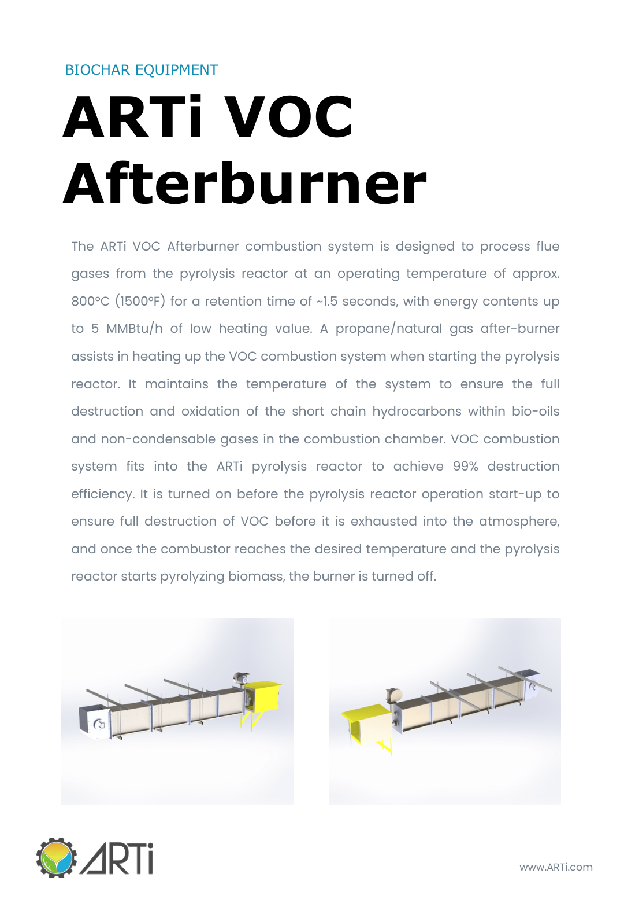

Pyrolysis: Destroy Contaminants and Produce Biochar
Pyrolysis thermally converts dried solids into a carbon-rich product while generating off-gas that can be combusted at high temperature. In the FECR site, pyrolysis is covered as part of the solids management train, not as a full biochar application site.

Pyrolysis train image from vendor material. ARTi has since changed its name to PyroNexus.

Afterburner concept from the pyrolysis equipment material.
Scope boundary
This site should explain why pyrolysis fits after drying, why off-gas combustion matters, and how biochar is produced. It should not try to become the main reference on biochar for wastewater cleanup.
Keep the rabbit hole closed: Applications such as PFAS adsorption, nZVI biochar, electrochemical treatment, and activated biochar belong in a separate Biochar Knowledge Base.
Because FECR is modular, pyrolysis can be added only when the utility, regulations, economics, and feedstock logistics support it.